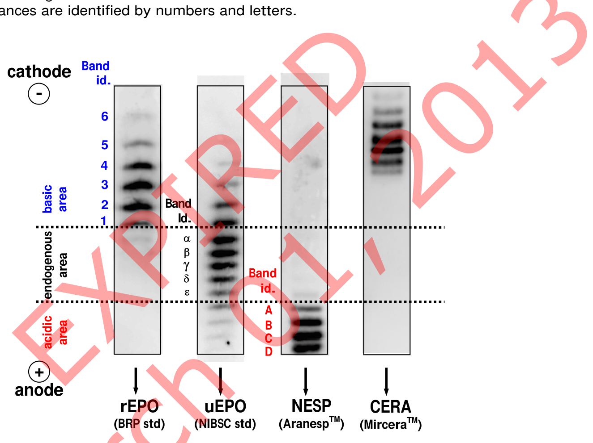
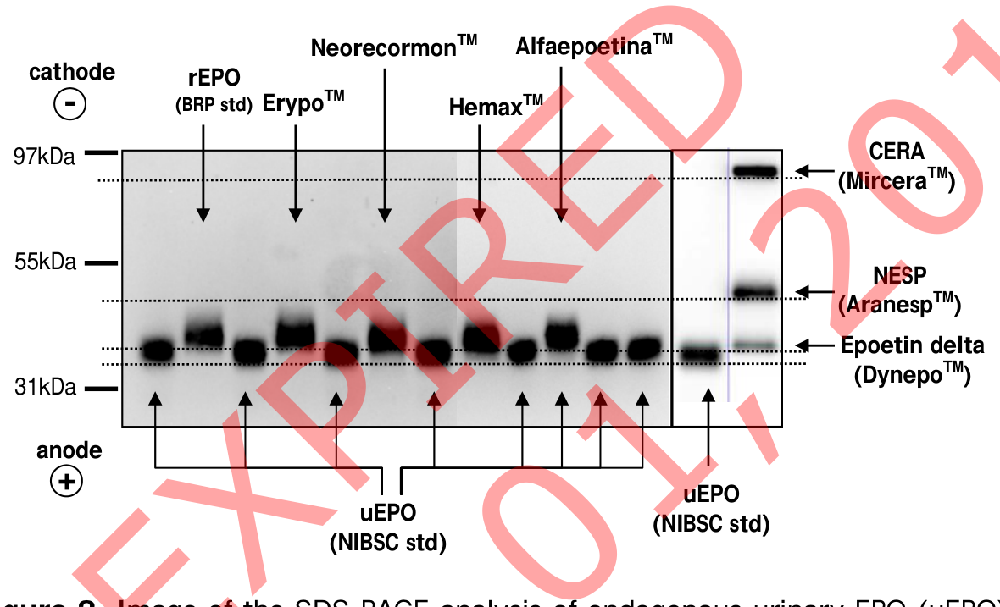

Technical Documents · TD2009EPO
Edition v2.0, 2009 (version 2.0) · effective 21 September 2009 · superseded
Retrieved on 25 November 2026 from https://www.wada-ama.org/sites/default/files/2022-01/WADA_TD2009EPO_Harmonization_of_Method_Identificiation_Recombinant_Erythropoietins_Analogues_EN.pdf
Editions: v1.0, 2027 (current) · v1.0, 2024 · v1.0, 2022 · v2.0, 2021 · v1.0, 2014 · v1.0, 2013 · v2.0, 2009 · v2.0, 2007 · v1.0, 2005
p. 1
HARMONIZATION OF THE METHOD FOR THE IDENTIFICATION OF RECOMBINANT ERYTHROPOIETINS (i.e. EPOETINS) AND ANALOGUES (e.g. DARBEPOETIN AND METHOXYPOLYETHYLENE GLYCOL-EPOETIN BETA).
-
Introduction The criteria presented herein have been established to ensure harmonization in the performance of the EPO test and the subsequent reporting of results across the Laboratories. All Laboratories are required to apply these criteria in the routine performance of the tests to identify the referred substances. In this document, erythropoietin and its analogues are referred to with the following abbreviations, acronyms or trademarks: EPO: Erythropoietin rEPO: recombinant erythropoietin. These pharmaceutical substances are known by their International Non-proprietary Name (INN) as "epoetin". The different preparations are identified by a Greek letter, e.g. epoetin alpha, beta, omega, delta, etc. Other preparations (e.g. generics or copies) referred collectively as "rEPO biosimilars" may have differing isoform profiles not exactly matching those already referenced. uEPO: endogenous erythropoietin (secreted naturally by the athlete's own tissues) as found in the urine. NESP (Aranesp™, Amgen): Novel erythropoietin stimulating protein, the erythropoietin analogue known by its INN as darbepoietin alfa. CERA (Mircera™, Roche): Continuous Erythropoietin Receptor Activator, the erythropoietin analogue known by its INN as methoxypolyethylene glycol-epoetin beta, a pegylated derivative of epoetin beta.
-
Description of the method The original isoelectric focusing (IEF) test for EPO was described by F. Lasne et al.(1).
2.1 Performing the IEF test:
2.1.1 Sample preparation: Sample preparation may consist (e.g. for urine) of a partially selective pre-concentration technique based on centrifugal ultrafiltration and buffer washing.
p. 2
Alternatively or additionally, purification by immunoaffinity or other method* is also acceptable as part of the sample preparation process (e.g. in particular when analysing plasma or serum) (2, 3).
*Note: Although alternative pre-concentration or purification techniques may be used, any other method shall require an appropriate validation by the Laboratory.
2.1.2 Isoelectric Focusing (IEF): Isoelectric focusing is performed in a pH range compatible with the isoelectric points (pI) of both the natural urinary EPO and its recombinant analogues (e.g. approximately in the pH range of 2 to 6). The pH gradient is constructed using carrier ampholytes and IEF is performed under denaturing conditions (approximately 7 M urea).
2.1.3 Double blotting: After IEF separation, a double blotting procedure is followed. In the first blot, proteins in the gel are transferred onto a first polyvinylidene fluoride (PVDF) membrane. After that, a monoclonal antibody (mAb) (clone AE7A5) is applied to recognise EPO. In a second blot, the interaction between EPO and the mAb is disrupted at an acidic pH and the mAb is transferred to a second PVDF membrane.
Note: The method relies on the particular specificity and affinity of the mAb with which it was developed (clone AE7A5, recommended supplier: R&D Systems of Minneapolis, USA). This antibody is considered a critical reagent and shall not be changed. Because the method relies on an isoelectric focusing separation prior to the antibody-based detection, the use of a unique primary antibody is deemed scientifically acceptable. Consequently, this method shall prevail over any other requirements in the ISL or any other Technical Document including but not limited to the third sentence of clause 5.2.4.3 ("A Confirmation Procedure shall have equal or greater selectivity/discrimination than the Initial Testing Procedure") of the WADC International Standard for Laboratories (version 6.0) does not apply for this specific test.
2.1.4 Chemiluminescent detection: The position of the mAb on the membrane is revealed by adding a sequence of reagents terminating in a peroxidase. This peroxidase generates light in the presence of the appropriate chemiluminescent substrate, allowing the generation of an image that maps the original position and quantity of EPO in the gel after IEF separation.
Typically, this sequence of reagents is made up of: primary mouse anti-human EPO mAb - biotinylated anti-mouse secondary antibody - streptavidin-horseradish peroxidase complex - chemiluminescent substrate for horseradish peroxidase.
p. 3
3 Evaluation and Interpretation of Results
Results from the Confirmation Procedure need to fulfil the quality, identification and stability criteria described herein. Figure 1 shows an illustration of a test result. The identification windows for each electrophoretic lane as well as the basic, endogenous and acidic areas are defined. Bands of the reference substances are identified by numbers and letters.

The basic and acidic areas are defined, as described, by the position of the bands corresponding to the rEPO Biological Reference Preparation (BRP) of the European Pharmacopeia (equimolar mixture of epoetin alpha and beta) and NESP; by exclusion, the endogenous area is defined in between. In the figure the endogenous area is exemplified by uEPO (International Reference Preparation, IRP, from the National Institute for Biological Standards and Control, NIBSC, of UK). The bands of rEPO, uEPO and NESP in the basic, endogenous and acidic areas respectively, are identified by numbers and letters
Figure 1. Image of the identification windows of lanes obtained by the chemiluminescence acquisition system corresponding to the analysis of rEPO, CERA, NESP and uEPO. March 01, 2013
p. 4
as shown. CERA shows a different pattern with some bands approximately co-localized with those defined by rEPO and others interspersed amongst rEPO bands. This band pattern specifically identifies CERA.
or
The evaluation of the image obtained is based on the consecutive application of: - acceptance criteria; - identification criteria; - stability criteria.
3.1 Acceptance criteria The acceptance criteria define the requisites that the image shall fulfil to allow the application of the identification criteria in order to ascertain the presence of rEPO, CERA or NESP. 1. Spots, smears, areas of excessive background or absent signal in a lane that significantly interfere with the application of the identification criteria shall invalidate the lane.
- Comparison to reference samples shall allow assignment of corresponding migrating bands in the athlete's sample.
3.2 Identification criteria The following identification criteria define the requisites that the image shall fulfil to consider an Adverse Analytical Finding corresponding to the presence of rEPO, NESP or CERA.
Methyl red may be used in the electropherogram to facilitate positioning and numbering of bands on the gel.
3.2.1 EPOETIN ALPHA AND BETA 1. In the basic area (as defined in Figure 1) there must be at least 3 acceptable, consecutive bands assigned as "1", "2", and "3" in the corresponding reference preparation; 2. The 2 most intense bands measured by densitometry shall be in the basic area, shall be consecutive and shall be bands "1" and "2" or "2" and "3"; 3. Each of the two most intense bands in the basic area must be more intense (approximately twice or more) than any band in the endogenous area, as measured by densitometry. Additional Evidence, as described in the section 3.2.5 below, must be obtained confirming the presence of an exogenously produced EPO.
p. 5
-
In the basic area (as defined in Figure 1) there must be at least 3 acceptable, consecutive bands.
-
The 2 most intense bands measured by densitometry in the basic area must be consecutive.
or
- The sum of the intensity of all bands in the basic area, must account for approximately 85% or more of the total intensity of the bands within the window of the sample lane. Additional Evidence, as described in the section 3.2.5 below, must be obtained confirming the presence of an exogenously produced EPO.
3.2.3 DARBEPOETIN ALPHA (NESP) 1. In the acidic area (as defined in Figure 1) there must be at least 3 acceptable, consecutive bands assigned as "B", "C" and "D" in the corresponding reference preparation; 2. The most intense band measured by densitometry must be "C" or "D"; 3. Both bands "C" or "D" must be more intense than ban "B".
3.2.4 METHOXYPOLYETHYLENE GLYCOL EPOETIN BETA (CERA) In the basic area, there must be at least 4 consecutive bands corresponding with CERA reference substance.
3.2.5 ADDITIONAL EVIDENCE When the profile is not consistent with a typical endogenous profile (as referenced by the uEPO NIBSC standard) but does not fulfil the strict criteria defined in the above section 3.2.1 to 3.2.4, it may be due to other biosimilar rEPOs (4, 5) or a combination of susbtances. Thus the most intense bands may be other than "1", "2" or "3" or may show some intense band in the endogenous area (e.g. epoetin delta - DYNEPO™) (6), or be an atypical profile (shifted towards the basic area)(7), etc. In such cases, additional scientific evidence may be needed to arrive at a final conclusion. The application of an electrophoretic SDS-PAGE procedure or equivalent where protein separation is based on a different principle (i.e. apparent molecular mass or hydrodynamic volume) can be used complementarily to the IEF method for the purpose of helping to confirm the exogenous or endogenous origin of the finding (7, 8). SDS-PAGE is a well established technique that does not require further specific description. However, it is worth mentioning that for this method, an immunoaffinity purification step is a necessary part of the sample preparation process. The electrophoretic separation may be used in combination with single or double blotting and chemiluminescence detection (as for the IEF method). The migration behaviour of each substance (band), i.e. position and shape
p. 6
(width, focused or more diffused) can be used to confirm the identity and/or exogenous origin of the substance. The centroid or the boundaries of the width of the band can be used to ascertain that its position differs from the position of endogenous EPO run in parallel as illustrated in figure 2.

Figure 2 exemplifies the SDS-PAGE behaviour of different rEPOs as well as uEPO, NESP and CERA. Figure 2. Image of the SDS-PAGE analysis of endogenous urinary EPO (uEPO), some commercially available rEPO preparations, as well as NESP and CERA. 3.3 Stability Criteria (applicable to urine Samples only) When, after applying the above identification criteria, a Sample is suspected of an Adverse Analytical Finding, the confirmation phase shall also establish the stability of the profile found or that the instability did not cause the Adverse Analytical Finding. Since it cannot be discounted that some rare factors may interfere with the stability of a urine Sample and may affect the interpretation of an Adverse Analytical Finding for EPO, a stability test shall be performed before reporting an Adverse Analytical Finding in urine (9). While it is recognized that other specific reagents may be developed and validated by the Laboratory, an acceptable procedure for the stability test in urine is as follows: March 01, 2013
p. 7
Reagents:
Pepstatin A: 1 mg/mL in methanol CompleteTM (Roche): 1 tablet /2 mL of water Microcon® YM-30 (Millipore), MWCO, 30,000 Da 50 mM sodium acetate buffer pH~5 Tween-80 BRP and NESP
Method: Centrifuge 0.6 mL of urine 10 min, 2700 RCF, 20 °C and put 0.5 mL of supernatant in a test tube Add 20 µL of Pepstatin A and 5 µL of CompleteTM Concentrate to approximately 30 µL using the Microcon® Add 200 µL of acetate buffer into the sample reservoir and mix by vortexing before the invert recovery spin Adjust the volume of the recovered sample to 0.5 mL with acetate buffer Add 20 µL of Pepstatin A and 5 µL of CompleteTM Incubate 15 ± 2 min at room temperature Add a mixture of BRP and NESP to a final concentration 1.5 x conc. used in the reference lanes of IEF Incubate overnight at 37 °C Take 20 µL. Heat at 80 °C for 3 min Add Tween-80 Apply to IEF gel The criteria to demonstrate stability are:
- The method described above does not result in a substantial shift in the position of the bands or in the appearance of new band(s) in the stability test lane compared to the reference standard lane(s) and; 2. The distribution of the most intense bands in the results of "A" Initial Testing Procedure, "A" Confirmation Procedure (and "B" Confirmation Procedure when available) is similar. In cases where a urine Sample suspected of an Adverse Analytical Finding shows instability, the application of the SDS-PAGE procedure can also be used to rule out its impact on the finding, or to confirm the exogenous origin of the substance irrespective of the instability found. The SDS-PAGE behaviour of these substances is not significantly affected by this instability or if any, the effect will be to make the sample negative (7).
p. 8
The following information is considered acceptable as "initial and confirmation test data" in compliance with the WADA International Standard for Laboratories - Technical Document TD2009LDOC, for this particular method:
Provisions 3.2 and 6.2 of the Code allow the use of results to establish profile of doping by Athletes. Thus, even if the results of EPO analysis are reported as
Initial Testing Procedure Data: - Image acquired from the detection system, corresponding to the lanes representing:
o Sample (initial testing aliquot) o Positive control sample or standard of the suspected or equivalent
substance (i.e epoetins, darbepoetin, pegserpoetin) o Negative control sample or standard of urinary EPO (uEPO). - Processed images, such as densitometry profiles and/or contoured renditions
of the signal density in the original image. These should show annotations demonstrating the application of the criteria to the isoform distribution of the Sample. - Description of the result based upon application of all the criteria
described in
this Technical Document. Confirmation Procedure Data: - Image acquired from the detection system, corresponding to the lanes representing:
o Sample (confirmation aliquot) o stability test of urine (not applicable for plasma or serum Samples) o Positive control sample (e.g epoetins, darbepoetin, CERA) o Standard of the suspected or equivalent substance. o Negative control sample o Standard of urinary EPO (uEPO). - Processed images, such as densitometry profiles and/or contoured renditions
of the signal density in the original image. These should show annotations demonstrating the application of the criteria to the isoform distribution of the Sample. - Description of the result based upon the application of the different criteria described in this Technical Document. WADA requires that a second opinion is provided by one of the authors of this Technical Document before any Adverse Analytical Finding for rEPO or its analogues is reported to the result management authority(-ies). Please note that one second opinion is sufficient to support such Adverse Analytical Finding. A second opinion shall be inserted as part of the Laboratory record in the Laboratory Documentation Package.
p. 9
negative by a Laboratory on the basis of IEF and/or SDS-PAGE analysis, information contained in the analysis combined with other information (e.g. blood variables, longitudinal profiles, testimonies,…) may remain relevant in a more general context to establish anti-doping rule violations.
5 References (1) F. Lasne et al. Anal Biochem 2002; 311: 119-126. (2) F. Lasne et al. Int J Biol Macromol 2007; 41: 354-357. (3) J. Mallorquí et al. Haematologica 2008; 93 (2): 313-314. (4) H Schellekens. Eur J Hosp Pharm 2004; 3: 43-47. (5) S.S. Park et al. J. Pharm. Sci. 2009; 98(5): 1688-1699. (6) V. Belalcazar et al. Am J Hematol 2008; 83(9): 754-755. (7) C. Reichel et al. Drug Test Analysis 2009; 1: 43-50. (8) M. Kohler et al. Int. J. Sports Med 2008; 29: 1-6. (9) F. Lasne et al. In: Schänzer W, Geyer H, Gotzmann A, Mareck U, eds. Recent advances in doping analysis (13). Cologne: Sport und Buch Straub, 2005; 297-304. EXPIRED March 01, 2013
Retrieved on 25 November 2026 from https://www.wada-ama.org/sites/default/files/2022-01/WADA_TD2009EPO_Harmonization_of_Method_Identificiation_Recombinant_Erythropoietins_Analogues_EN.pdf